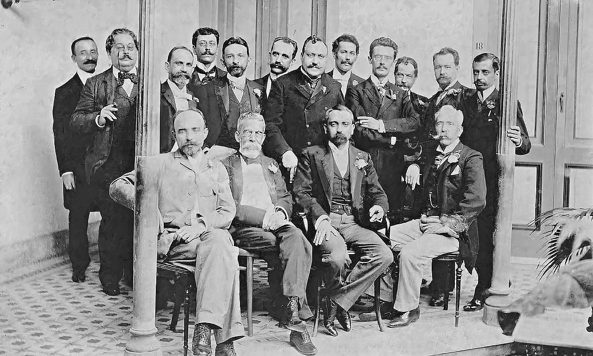

CURIOSIDADES
Spoiler: indicado por Dom Pedro 2º, ele teve até um cargo na área da agricultura.
Na lista abaixo, 11 histórias menos conhecidas e nada banais da vida pessoal e profissional de Machado de Assis.
- Origem Humilde
O avô de Machado de Assis foi escravo em uma chácara no morro do Livramento, no Rio de Janeiro, onde o escritor nasceu e foi batizado pela dona da casa, Maria José de Mendonça Barroso. Aliás, foi lá que ele aprendeu a ler. - Livros Traduzidos
Machado foi responsável por uma das primeiras traduções do conto O Corvo, de Edgar Allan Poe. O autor brasileiro falava francês — alguns acreditam que ele aprendeu a língua com um padeiro — e também traduziu Os Trabalhadores do Mar, de Victor Hugo. - Chefia na ABL
Foi um dos fundadores da Academia Brasileira de Letras (ABL) e ocupou a cadeira 23 — na época, a primeira cadeira foi designada a José de Alencar. Machado foi o primeiro presidente da instituição. Integrantes da “Panelinha", criada em 1901 para a realização de festivos ágapes e encontros de escritores e artistas. Muitos deles também membros da Academia Brasileira de Letras. Machado de Assis é o segundo sentado, da esquerda para a direita. - Fama de Bruxo
Foi apelidado pelos vizinhos de “Bruxo do Cosme Velho”, pois teria queimado cartas em um caldeirão em sua casa que ficava na Rua Cosme Velho. O apelido, entretanto, só pegou quando o poeta Carlos Drummond de Andrade fez o poema A um bruxo, com amor, que reverencia o escritor. - Diagnóstico Precoce
Em seu livro Anjo Rafael, Machado de Assis previu a existência da doença mental folie à deux (delírio a dois, em português) antes de ela ser descrita. A obra conta a história de uma filha que é “contagiada” pela loucura do pai, enlouquecendo também. Anos depois da publicação, o mal foi descoberto por pesquisadores. Como se não bastasse, o brasileiro também descobriu a cura para a doença: afastar a pessoa saudável de quem tem o problema mental. - Talento no Xadrez
O autor era enxadrista e participou do primeiro campeonato brasileiro do esporte mental, ficando em terceiro lugar. As peças que utilizou estão expostas até hoje na Academia Brasileira de Letras. - Amor da Vida
Ele foi casado por 35 anos com Carolina Machado, que era quatro anos mais velha, mas não tiveram filhos. Alguns especialistas dizem que Carolina era muito inteligente e ajudava na revisão dos textos. Com a morte da mulher, Machado entrou em profunda depressão e escreveu para o amigo Joaquim Nabuco: “Foi-se a melhor parte da minha vida, e aqui estou só no mundo”. - Gafe Histórica
No prefácio da segunda edição de sua obra Poesias Completas, publicada em 1902, a palavra "cegara" foi substituída, na expressão “lhe cegara o juízo”, por um inusitado “cagara”. Diz a lenda que o próprio Machado teria participado de um mutirão para corrigir os exemplares antes de chegarem ao público. O que se sabe é que alguns escaparam e saíram com o erro. - Vários Ofícios
Machado escreveu nove textos teatrais e foi crítico dessa forma de arte desde os 21 anos. Também trabalhou como jornalista e, no início da juventude, vendeu doces feitos pela madrasta e engraxou sapatos. Alguns especialistas acreditam que ele chegou a ser coroinha em uma igreja, mas não há confirmações. - Cargos Públicos
Em 1888, foi condecorado pelo então imperador Dom Pedro 2º com a Ordem da Rosa e, meses depois, foi indicado para fazer parte da Secretaria da Agricultura. Anos mais tarde, chegou a ocupar o cargo de diretor-geral da viação da Secretaria da Indústria, Viação e Obras Públicas. - Luta
Era epilético e apresentava sinais de gagueira, o que contribuiu para formação de sua personalidade insegura e reclusa. Além disso, Machado de Assis, por ser mulato, enfrentou muito preconceito para conseguir reconhecimento.